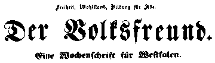

Works of Karl Marx 1849

Source: MECW Volume 9, p. 477;
Written: on June 21, 1849;
First published: in the newspaper Der Volksfreund No. 26, June 29, 1849.
Paris June 21
You are sufficiently acquainted with the Paris population to realise a priori the absurdity of the accusation of cowardice. Nevertheless, I can understand that in Germany especially the day of June 13 remains completely enigmatic and is bound to give rise to all kinds of malicious misinterpretations.
The chief actor in the drama of June 13 was not the people, but the “Mountain”. Behind the “Mountain”, it is true, there was in turn a secret committee [395] which pushed matters forward and more or less compelled Ledru-Rollin to play that particular role.
The chief error of the “Mountain” was its certainty of being victorious. It was so sure of this that it believed everything could be achieved by a peaceful demonstration. Thus it afforded the Government the opportunity of defeating it without having to strike a blow against it. The procession which made its way from Château d'eau through the boulevards was entirely unarmed. The Government, for its part, being fully informed on all details by its spies, had quietly and unnoticed arranged for all important points to be occupied by the National Guard, sharpshooters from Vincennes and other troops. The procession was completely encircled and even if it had been armed could not have offered any resistance. How much less could it do so, being unarmed! Changarnier, who had taken all necessary measures, was clever enough not to allow the alarm to be sounded. As if by magic, it was suddenly seen that all decisive points were occupied by troops. You can therefore understand that the unarmed masses quickly dispersed in order to get weapons, but even the arms depots which had been prepared in advance for the eventuality of an uprising were found to have been seized by the Government and put under military guard. The uprising was thus outwitted.
That is the whole secret of this unprecedented day in the history of the French revolution. You may perhaps have read in the German newspapers of barricades which were said to have been easily captured. These barricades consisted of nothing but a few chairs which were thrown on to the street in order to halt for a moment the cavalry which were attacking unarmed people with their sabres.
In addition, there were some other circumstances which made the shameful outcome of June 13 inevitable.
At the very moment when Ledru-Rollin and his colleagues in the Conservatoire des Arts[396] were occupied with constituting themselves as the Provisional Government, the secret socialist committee was engaged on the same task. It wanted to constitute itself as the Commune. Hence, even before the existing power was overthrown, the uprising had already split into two camps, and the important thing is that the People’s Party was not the party of the “Mountain”. This fact alone explains a great deal. The secret committee had wanted to start the outbreak already some days previously and by night. In that way the Government would have been taken by surprise. But the “Mountain” and the “Friends of the Constitution” (the party of the National)[397] allied with it were opposed to this. They wanted to have the initiative in their hands. Ledru-Rollin’s speech in the Chamber[398] was to be the pledge that the “Mountain” had decided on serious action. Thus on the one hand, those advocating immediate vigorous action were frustrated and preparations were made for a peaceful demonstration. On the other hand, the people who saw that Ledru-Rollin had so strikingly committed himself in the National Assembly, believed he possessed immense connections within the army and a profoundly conceived and far-reaching plan etc. How surprised, therefore, they must have been when it became obvious that Ledru-Rollin’s power was a mere illusion and that precautionary measures and preparations for an attack had been taken only by the Government. Thus you see how the two revolutionary parties paralysed and deluded each other. The people’s recollections of the more than ambiguous behaviour of the “Mountain” and of Ledru-Rollin in particular during May and June,[399] and finally the cholera, which raged especially in the working-class districts, did the rest. Taken as a whole, June 13, 1849 is only the retaliation for June 1848. On that occasion the proletariat was deserted by the “Mountain”, this time the “Mountain” was deserted by the proletariat.
However grievous June 13 is bound to be for our party throughout Europe, the good thing about that day is that, with the exception of Lyons,[400] the counter-revolutionary party in the National Assembly arrived at sole power without much bloodshed. That party will not only disintegrate, its extreme faction will soon reach a point when it will seek to discard even the irksome semblance of the Republic, and then you will see how it will be blown away with a single breath and there will be a repetition of the February, but on a higher level.
K. M.x.